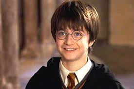

Orphelin, Harry Potter a été recueilli à contrecœur par son oncle Vernon et sa tante Pétunia, aussi cruels que mesquins, qui n'hésitent pas à le faire dormir dans le placard sous l'escalier. Constamment maltraité, il doit en outre supporter les jérémiades de son cousin Dudley, garçon cupide et archi-gâté par ses parents. De leur côté, Vernon et Pétunia détestent leur neveu dont la présence leur rappelle sans cesse le tempérament "imprévisible" des parents du garçon et leur mort mystérieuse. À l'approche de ses 11 ans, Harry ne s'attend à rien de particulier – ni carte, ni cadeau, ni même un goûter d'anniversaire. Et pourtant, c'est à cette occasion qu'il découvre qu'il est le fils de deux puissants magiciens et qu'il possède lui aussi d'extraordinaires pouvoirs. Quand on lui propose d'intégrer Poudlard, la prestigieuse école de sorcellerie, il trouve enfin le foyer et la famille qui lui ont toujours manqué… et s'engage dans l'aventure de sa vie
